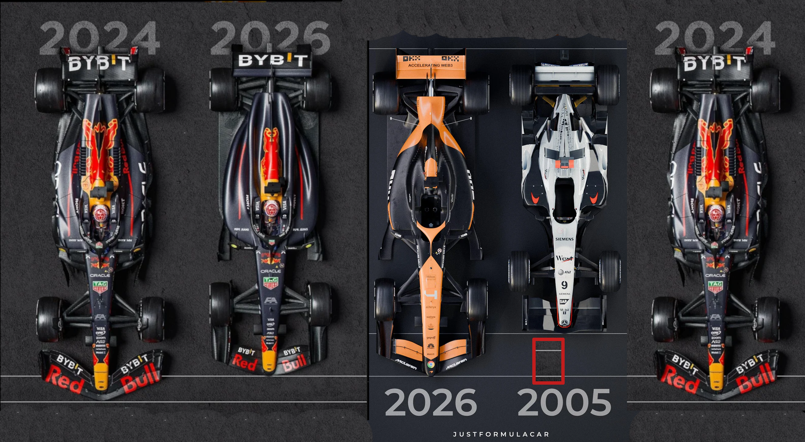
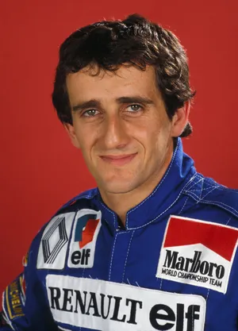
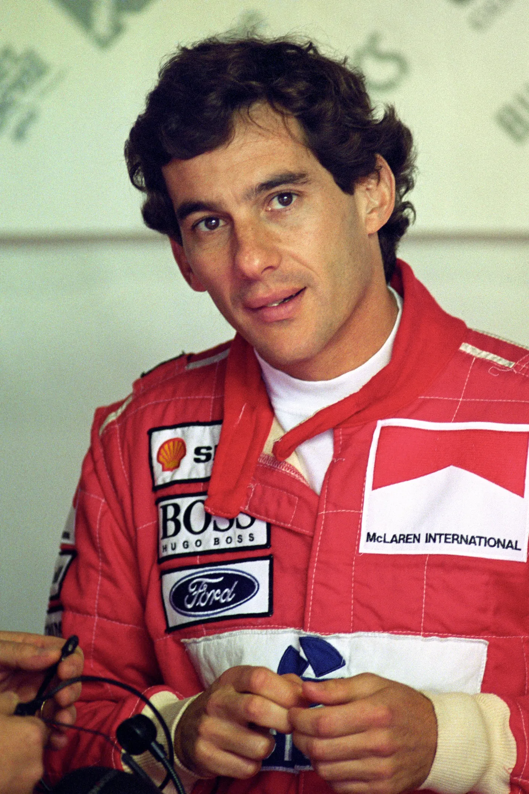
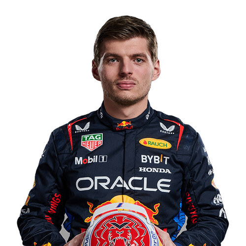

O início da Fórmula 1
O Campeonato Mundial de Fórmula 1 começou em 1950 e, desde então, tornou-se uma das principais competições do automobilismo mundial.
Ao longo das décadas, a categoria passou por grandes transformações. Os carros ficaram mais rápidos, seguros e tecnologicamente avançados, enquanto pilotos e equipes protagonizaram disputas que entraram para a história.

Pilotos que marcaram a história
Ao longo da história da Fórmula 1, grandes pilotos se destacaram por suas conquistas, rivalidades, recordes e habilidades nas pistas. Cada geração teve nomes que ajudaram a transformar a categoria.
Juan Manuel Fangio

Juan Manuel Fangio foi um dos primeiros grandes nomes da Fórmula 1. O piloto argentino conquistou cinco títulos mundiais durante a década de 1950 e dominou os primeiros anos da categoria. Seu recorde de cinco campeonatos permaneceu por décadas.
Alain Prost

Alain Prost conquistou quatro campeonatos mundiais e ficou conhecido por sua pilotagem estratégica e precisa. O francês também protagonizou uma das maiores rivalidades da história da Fórmula 1 ao disputar títulos e corridas contra Ayrton Senna.
Ayrton Senna

Ayrton Senna é um dos maiores nomes da história do automobilismo brasileiro. Tricampeão mundial de Fórmula 1, conquistou os títulos de 1988, 1990 e 1991.
Michael Schumacher

Michael Schumacher conquistou sete campeonatos mundiais e marcou uma era de domínio da Ferrari, tornando-se um dos pilotos mais vitoriosos da história da categoria.
Lewis Hamilton

Lewis Hamilton também conquistou sete títulos mundiais e estabeleceu diversos recordes ao longo de sua carreira, tornando-se um dos principais nomes da Fórmula 1 moderna.
Max Verstappen

Max Verstappen tornou-se um dos grandes nomes da geração atual da Fórmula 1, destacando-se por seu estilo de pilotagem e pelas conquistas alcançadas na categoria.
Brasil na Fórmula 1
O Brasil possui uma história de destaque na Fórmula 1. Ao longo de diferentes gerações, pilotos brasileiros conquistaram títulos, vitórias e protagonizaram momentos marcantes na categoria.
Emerson Fittipaldi
Emerson Fittipaldi foi o primeiro brasileiro campeão mundial de Fórmula 1. Conquistou os títulos de 1972 e 1974, abrindo caminho para uma geração de pilotos brasileiros no automobilismo mundial.
Nelson Piquet
Nelson Piquet conquistou três campeonatos mundiais de Fórmula 1, nos anos de 1981, 1983 e 1987. Suas conquistas ajudaram a consolidar o Brasil como uma das grandes forças da categoria naquele período.
Ayrton Senna
Ayrton Senna conquistou três títulos mundiais, em 1988, 1990 e 1991. Suas performances, especialmente em classificações e corridas sob chuva, fizeram dele um dos pilotos mais reconhecidos da história da Fórmula 1.
Rubens Barrichello
Rubens Barrichello construiu uma longa carreira na Fórmula 1 e conquistou vitórias importantes durante sua passagem pela Ferrari. O brasileiro também foi vice-campeão mundial em 2002 e 2004.
Felipe Massa
Felipe Massa conquistou diversas vitórias na Fórmula 1 e disputou diretamente o campeonato mundial de 2008. No Grande Prêmio do Brasil, venceu em Interlagos, mas perdeu o título para Lewis Hamilton por apenas um ponto.
Gabriel Bortoleto
Gabriel Bortoleto representa uma nova geração de pilotos brasileiros na Fórmula 1. Após conquistar títulos nas categorias de base, chegou à principal categoria do automobilismo mundial, retomando a presença de um piloto brasileiro no grid.
Campeões brasileiros
- Emerson Fittipaldi - 2 títulos
- Nelson Piquet - 3 títulos
- Ayrton Senna - 3 títulos
Juntos, os pilotos brasileiros conquistaram oito campeonatos mundiais de Fórmula 1.
Corridas inesquecíveis
Ao longo da história da Fórmula 1, algumas corridas ficaram marcadas por atuações extraordinárias, decisões de campeonato, condições climáticas extremas e finais imprevisíveis.
Grande Prêmio da Europa de 1993
Disputada em Donington Park sob condições de pista molhada, a corrida ficou marcada por uma das grandes atuações de Ayrton Senna. Após largar em quarto lugar, o brasileiro realizou diversas ultrapassagens ainda na primeira volta e assumiu a liderança. Senna venceu a prova com uma atuação que se tornou histórica.
Grande Prêmio do Brasil de 2008
A decisão do campeonato de 2008 aconteceu em Interlagos. Felipe Massa venceu a corrida e, por alguns segundos, parecia ter conquistado o título mundial. Entretanto, Lewis Hamilton ultrapassou Timo Glock nas últimas curvas e terminou em quinto lugar, posição suficiente para conquistar o campeonato por apenas um ponto.
Grande Prêmio do Canadá de 2011
Marcada por fortes chuvas e diversas interrupções, a corrida no Canadá tornou-se uma das mais longas da história da Fórmula 1. Jenson Button realizou uma grande recuperação e ultrapassou Sebastian Vettel na última volta para conquistar a vitória.
Grande Prêmio da Alemanha de 2019
A chuva transformou a corrida em Hockenheim em uma prova imprevisível. Acidentes, erros, mudanças constantes de pneus e estratégias diferentes alteraram a classificação diversas vezes. Max Verstappen conseguiu superar as condições difíceis e conquistou a vitória.
Grande Prêmio de Abu Dhabi de 2021
Lewis Hamilton e Max Verstappen chegaram à última corrida da temporada empatados em pontos. Após a entrada do safety car nas voltas finais, o campeonato foi decidido na última volta.Verstappen ultrapassou Hamilton e conquistou seu primeiro título mundial de Fórmula 1.
Momentos da Fórmula 1
Assista a um vídeo sobre alguns dos grandes momentos da Fórmula 1: